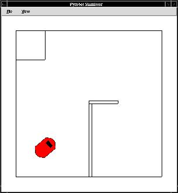
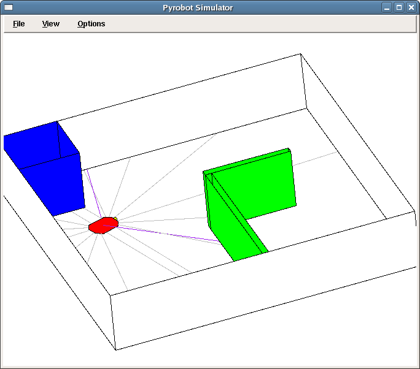
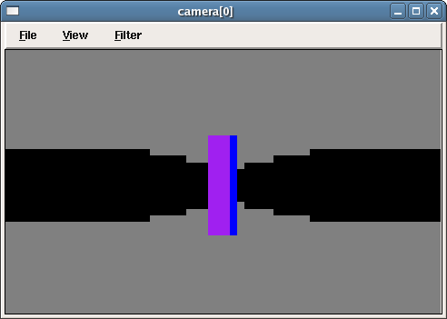
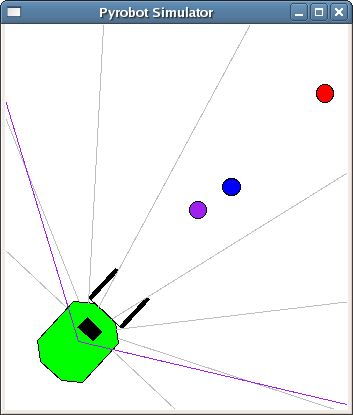
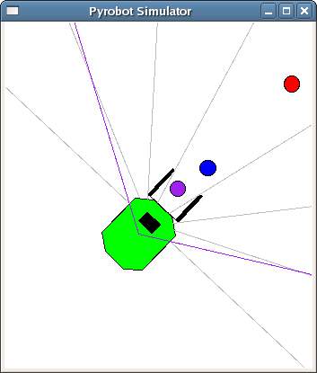
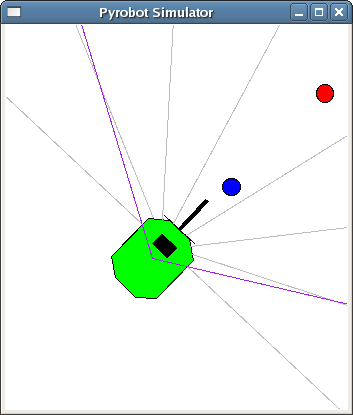
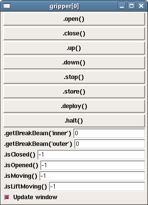
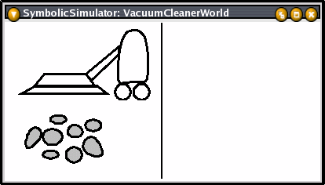
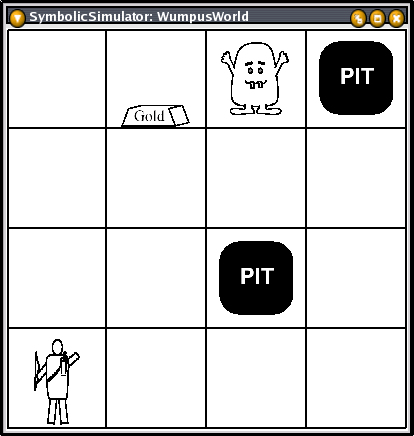

|
|||||||
| [ Home ] | [ Software ] | [ Curriculum ] | [ Hardware ] | [ Community ] | [ News ] | [ Publications ] | [ Search ] |
|
The Pyrobot SimulatorThe Pyrobot Simulator is designed to allow the Pyro interface to be used to explore two kinds of worlds: symbolic (such as the Wumpus world) and continuous (such as using pioneer-style robots to do light and sonary sensing). All of the code for this simulator is written in Python with no other dependencies. This means that this simulator is usable from any platform (OS X, Windows, etc).
The Pyrobot User InterfaceThe window below shows an example of a Pyrobot simulated environment called BraitenbergWorld.py:
It is a simple enclosure with a light source at the center and a Pioneer-style robot with both light and sonar sensors. In a Pyrobot window, you can pan and zoom the world as well as manipulate the robot by using your mouse. You can click your mouse buttons on the background of the window or on the robot. The following table summarizes various mouse click bindings and actions: Clicks on the background
Clicks on robot
Menu items You can turn off and on the drawing of various lines, paths, boundaries, and rays via the "View" menu. As of Pyro Version 4.3.2, you can also set the ability of the lights to shine over walls or not via the "Options" menu.
Creating Continuous WorldsThe Pyrobot Simulator supports continuous worlds in Python, like all of the other simulators that Pyro works with. Within continuous worlds, it supports sonar, light, gripper, bulb, camera, pan-tilt-zoom (PTZ) and position (movement and odometry) interfaces, as well as an interface called simulation that allows you to place the robot at a particular location and orientation.  Worlds in the Pyrobot Simulator are actually Python code. You can add boxes, walls, and robots. However, as this simulator is written in a straight-forward manner in Python with no optimizations, it is best not to add large numbers of objects. The Pyrobot simulator is designed to be used for basic worlds in cases where cross-platform compatibility is important. See also PyroFromPython for additonal comments about these type of worlds. Here is the code for the Tutorial.py world shown above.
from pyrobot.simulators.pysim import *
def INIT():
# (width, height), (offset x, offset y), scale:
sim = TkSimulator((600, 600), (50, 550), 100)
# x1, y1, x2, y2 in meters:
sim.addBox(0, 0, 5, 5)
sim.addBox(0, 4, 1, 5, "blue")
sim.addBox(2.5, 0, 2.6, 2.5, "green")
sim.addBox(2.5, 2.5, 3.9, 2.6, "green")
# port, name, x, y, th, bounding Xs, bounding Ys, color
# (optional TK color name):
sim.addRobot(60000, TkPioneer("RedPioneer",
.5, 2.5, 0.00,
((.225, .225, -.225, -.225),
(.175, -.175, -.175, .175))))
# add some sensors:
sim.robots[0].addDevice(PioneerFrontSonars()) # for 8 front sonar
# or: sim.robots[0].addDevice(Pioneer16Sonars()) # for full 360 sonar
sim.robots[0].addDevice(PioneerFrontLightSensors())
# x, y relative to body center (beyond bounding box):
sim.robots[0].addDevice(BulbDevice(0.226, 0)) # pose x, pose y
# width, height, startAngle, stopAngle, pose x, pose y, pose thr:
sim.robots[0].addDevice(Camera(60, 40, 0, 120, 0, 0, 0))
return sim
Let's consider the line that creates the sim instance. First
you must determine the width and height of the simulator window in
pixels. Here we have chosen 600 by 600. Next, you must designate the
x and y offset of the view within this window. In this case the view
will start 50 pixels in on the bottom-left corner and will end 50
pixels from the top-right corner. Finally, you must set the scale of
the environment in pixels per meter. In this case we have chosen 100
pixels per meter. Note that the origin is at the bottom-left corner of
the window's view.
Next we have created a series of four boxes. Each box is described by two points designating the bottom-left corner and the top-right corner. The first box sets the outer boundaries of the environment. The second box is an obstacle in the top-left corner of the environment. The last two boxes create a smaller inner room at the bottom-right corner of the environment. Once the environment has been determined, we can add a robot. In this case, the robot is a Pioneer-style robot communicating on port 60000 and it has a bank of sonar sensors, bulb, light sensors, and camera.
Continuous Worlds SimulatorsThere are actually three different classes for creating simulated continuous worlds, Simulator, TkSimulator, and Tk3DSimulator, each extending the previous. The Simulator is the base class, and does everything except actually display the world. The TkSimulator wraps the base simulator in Tkinter graphics calls for a fairly effecient 2D view of the simulator. Finally, Tk3DSimulator extends the 2D Tkinter view into 3D. This is new, and currently doesn't have real 3D objects; it simply displays the 2D world as a 3D projection. But, we can add real 3D objects in the future. This would allow objects to exist in the world at different heights.  The world view can be translated and rotate with:
sim.translateWorld(x, y, z) sim.rotateWorld(x, y, z) or from a robot:
self.robot.simulation[0].eval("self.translateWorld(x, y, z)")
self.robot.simulation[0].eval("self.rotateWorld(x, y, z)")
rotateWorld will rotate first x, then y, then z. To rotate in a different order, do them one at a time:
self.robot.simulation[0].eval("self.rotateWorld(0, 10, 0)")
self.robot.simulation[0].eval("self.rotateWorld(0, 0, 20)")
self.robot.simulation[0].eval("self.rotateWorld(-5, 0, 0)")
A mouse interface for translation and rotation is expected soon. The 2D mouse commands are currently still connected for the 3D view, but reflect the 2D view rather than the 3D view.
Continuous World DevicesThe continuous world allows six devices: ptz, simulation, gripper, light sensors, bulbs, and camera. In addition, there is a seventh device, position, which is available on the client side.
Simulation DeviceThe simulation device has the same interface as does Stage and Gazebo, and allows the programmer to move the robots in the simulation (robot.simulation[0].setPose(robotName, x, y, th)) or determine the actual position (robot.simulation[0].getPose(robotName)). Notice that any robot has the interface to move and query any other robot (e.g., all robots have the simulation interface). th is in degrees. The simulation device also support an eval method. See this page for examples.
Light DeviceThe light sensor device does two functions: it can detect light, and also can determine the color of the surround lights (much like a 1-pixel camera). You can use:
robot.light[0].value[1] robot.light[0].rgb[1]
where 0 means the first bank of light sensors (there could be more, but usually there is just the one), and 1 represents the second sensor of the bank. .value will return a list of light readings between 0 and 1. .rgb will return a list of red, green, blue triplets representing the colors picked up by the sensor.
The light sensor will combine all surrounding light (both intensity and color) for its readings.
Bulb DeviceThe bulb device is a way for the robot to produce light. The value of the bulb is 1.0 by default. You can change the value (using Pyro version 4.3.1 or greater) with the command:
robot.bulb[0].setBrightness(VAL)
where VAL is typically between 0.0 and 1.0. The bulb (currently) needs to be placed outside of the robot's bounding box.
Camera DeviceBeginning with Pyro version 4.5.0, the Pyrobot simulator now supports a camera device. This has some bits hardcoded for now (angle, x, y, th of camera is set to 0, 0, 0, 0 which puts it at the center of the robot looking out the front). Use the PTZ to change those settings dynamically. The camera device is CPU intensive, to give a good image. Set the width to be between 40 and 60 ray casts (less than 40 and you will not see objects; more than 60 and it will run slowly).  The Camera class in the simulator takes the following parameters (as of Pyrobot version 4.8.0):
Camera(width, height, panCenter, totalAngle, x, y, thr)
Width is the number of rays to cast to create the image. height is the size of the image. panCenter is the direction that the camera is facing (0 is front, positive degrees to the left, negative degrees to the right). totalAngle is the angle the camera covers, in degrees. x, y, thr is the position of the camera on the robot (0, 0, 0) is center (the position is not currently changable). The panCenter and totalAngle can be changed through a PTZ device (see below). Example:
sim.robots[0].addDevice(Camera(60, 40, 0, 120, 0, 0, 0))
This camera hss 60 rays, 40 pixels in height, faces forward (0), and has a 120 degree view. See also CamWorld.py below.
PTZ DeviceThis interface allows you to pan, tilt, and zoom the camera. The constructor takes a camera object:
cam = Camera(60, 40, 0, 120, 0, 0, 0)
sim.robots[0].addDevice(cam)
sim.robots[0].addDevice(PTZ(cam))
Speech DeviceThe Pyrobot Speech device allows you to see messages "spoken" by the robot, in a little dialog box.
robot.speech[0].say("Hello world!")
robot.speech[0].say("") # clears the speech box
Gripper DevicePyrobot Simulator, version 4.6 supports a gripper device. Along with the new Puck-type robot, and the new camera device, you can do some serious experiments with the Pyrobot Simulator. Here is CamWorld.py (code below):  The robot approaches a puck. Becareful not to bump it too hard as they will slide. You can tell that you have a puck in your gripper with robot.gripper[0].getBreakBeam('inner') and robot.gripper[0].getBreakBeam('outer'). In this position you can robot.gripper[0].close() and/or robot.gripper[0].store().  robot.gripper[0].store() will place the puck in a storage compartment in the robot:  You can drop a puck somewhere with robot.gripper[0].deploy(). Also, you can collect as many pucks as you want. Use the robot.gripper[0].open() to open the gripper without dropping a puck. If you select "gripper[0]" in the new Device selection list and click on "View" (or type robot.gripper[0].makeWindow()) you'll see:  This view shows the names of the properties and methods, and provides an easy-to-use interface for calling the methods. Here is a world showing the creation of pucks, camera, and gripper:
from pyrobot.simulators.pysim import *
def INIT():
# (width, height), (offset x, offset y), scale:
sim = TkSimulator((445,496),(26,426),39.911318)
# x1, y1, x2, y2 in meters:
sim.addBox(0, 0, 10, 10)
# port, name, x, y, th, bounding Xs, bounding Ys, color
# (optional TK color name):
sim.addRobot(60000, TkPioneer("Pioneer1",
5.60, 5.59, 5.53,
((.225, .225, -.225, -.225),
(.175, -.175, -.175, .175)),
"green"))
# add some sensors:
sim.robots[0].addDevice(PioneerFrontSonars())
sim.robots[0].addDevice(Camera(60, 40, 0, 120, 0, 0, 0))
sim.robots[0].addDevice(Gripper())
# Pucks don't have sockets to connect onto, but you can move them through the simulation device
sim.addRobot(None, TkPuck("Puck1", 6.28, 6.34, 0, ((.05, .05, -.05, -.05), (.05, -.05, -.05, .05)), "purple"))
sim.addRobot(None, TkPuck("Puck2", 6.47, 6.47, 0, ((.05, .05, -.05, -.05), (.05, -.05, -.05, .05)), "blue"))
sim.addRobot(None, TkPuck("Puck3", 7.0, 7.0, 0, ((.05, .05, -.05, -.05), (.05, -.05, -.05, .05)), "red"))
return sim
GeometryThe geometry, body, and bulb positions are given in this coordinate system, in meters:
left of robot
^
| +
y-axis |
|
(0,0)| +
back of robot <--------+----------------> Front of robot
- | x-axis
|
|
| -
V
right of robot
0,0 is the center of the robot. Zero degrees faces to the right in the picture, which is the front of the robot.
Special Features of Continuous WorldsThe following features allow Artificial Life-style experiments. Robots in continuous worlds each have an energy level that is by default initally set to 10,000 and decreases on each time step by the amount in maxEnergyCostPerStep. If you are using a world with light sources, then when the robot is close enough to a light source it can actually use the light as a source of energy. If you execute the command robot.eat(amount) where amount is an integer value and the light source is emitting at least that much energy, then the light's intensity will decrease by that amount and the robot's energy will increase by that amount. If you'd like to review the source code for the continuous portion of the Pyrobot simulator go to $PYROBOT/simulators/pysim/__init.py__ As of Pyro Version 4.3.2, you can also send commands to the simulator via the simulator device. You can send a command or statement like so:
>>> robot.simulation[0].eval("self.lightAboveWalls")
0
>>> robot.simulation[0].eval("self.lightAboveWalls = 1")
ok
Notice that "self" is the simulator. Currently, there is not an easy interface for sending arbitrary expressions to particular robots. See the source code for appropriate syntax.
Symbolic WorldsThe other type of worlds take symbolic commands as actions, and receive symbolic feedback as senses. This table shows which world, robot, and brain combinations work with the simulator:
Vacuum Cleaner WorldThe Vacuum Cleaner World is a simulation of the vacuum cleaning agent, as described in Russell and Norvig's "AI: A Modern Approach", Chapter 2. This is a very simple agent, as show below.  Images in simulation based on those by Russell and Norvig. Although this is a simple domain, it is useful because you can enumerate and diagram all of the states and transition diagrams. See Russell and Norvig for more details. One could also increase the number of rooms to make the problem more interesting. The world files are Python programs and fairly easy to create. See, for example, pyrobot/plugins/worlds/Pyrobot/VacuumCleanerWorld.py.
Actions
All commands return "ok" if understood correctly.
Perceptions
BrainA sample brain, CleanUp.py is provided:
# A Pyro brain to clean up two rooms
# After Russell and Norvig AIMA
from pyrobot.brain import Brain
class CleanUp(Brain):
def step(self):
if self.robot.status == "dirty":
self.self.move("suck")
elif self.robot.location == "A":
self.self.move("right")
elif self.robot.location == "B":
self.self.move("left")
def INIT(engine):
return CleanUp('AIMA', engine)
ExerciseStep through this brain in pyrobot.
Wumpus WorldThe Wumpus World is a simulation of the "Hunt the Wumpus" game, as described in Russell and Norvig's "AI: A Modern Approach", Chapter 7.  Images in simulator based on those by Russell and Norvig. The agent always begins in the bottom, right-hand cell (1, 1) facing to the right. The goal is to get to the cell with the gold and grab it. If you end up in a cell with the Wumpus or a pit, you're dead. The Wumpus does not move about, but is fixed for the entire game. In addition, there is a running score:
one move - minus 1 shoot arrow - minus 10 die - minus 1000 get gold - plus 1000 Can you get the gold, and maximize your score?
ActionsYou may make the following actions in the Wumpus World:
All commands return "ok" if understood correctly.
PerceptionsYou have access to the following senses in Wumpus World:
with each position indicating whether the agent senses the item, or None if not. These senses only measure the horizontally and vertically close cells, not the diagonally related ones. stench is sensed when you are close to the (alive or dead) Wumpus. breeze comes from nearby pits. glitter, of course, is sensed from the gold. A bump occurs after you head into a boundary wall. And the scream is heard after an arrow shot hits the wumpus. See Russell and Norvig for more details. You may also query the following state attributes:
ExerciseLoad the wumpus world and a robot into pyrobot. At the command line test out all of the actions and perceptions. Remember to precede all commands with a robot., for example robot.move('forward').
Konane WorldSee PyroModuleAI:GamePlaying for details on this world.
Next: The Stage Simulator Up: Robot Simulators | |||||||||||||||||||||||||||||||||||||||||||||||||||||||||||||||||||||||||||||||||||
| [ Home ] | [ Software ] | [ Curriculum ] | [ Hardware ] | [ Community ] | [ News ] | [ Publications ] | [ Search ] |
 View Wiki Source | Edit Wiki Source | Mail Webmaster
View Wiki Source | Edit Wiki Source | Mail Webmaster | |||||||